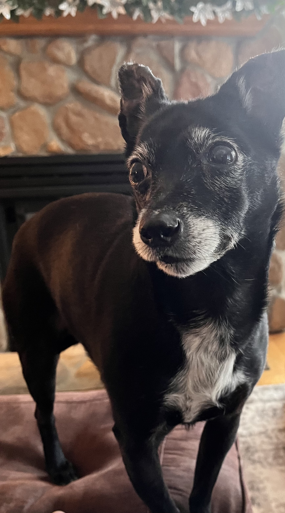

LOVEY’S SUPER PYTHON STUDY GUIDE!

Lovey is intrigued by Python!
General Exam Preparation Advice
- Review Readings and Lectures: Focus on key terms like “def” or “infinite loop”.
- Understand Code Application: Know how to write and interpret Python code, especially for file handling, lists, dictionaries, requests, and pandas.
- Practice with Examples: Use the FEQT from large group sessions as a model for exam questions.
- Group Study: Discuss and quiz each other on key concepts and potential exam questions.
- Note Sheet: Prepare a comprehensive 8.5x11 sheet with crucial notes and summaries.
Python Programming Study Guide: Units 07 - 12
Key Concepts
Unit 07: File Handling
- Open and Read Files: Using
open(),read(),readlines()for accessing file contents. - Write to Files: Using
write()to create or modify files. - Closing Files: Importance of closing files or using
withstatement for automatic closure.
Unit 08: Lists
- Mutable Sequence Types: Understanding that lists can be changed after creation.
- List Operations:
append(),index(),insert(),pop(),remove(),reverse(),count(). - Indexing and Slicing: Accessing elements using indices and slicing for sublists.
Unit 09: Dictionaries
- Key-Value Pairs: Understanding the structure of dictionaries.
- Dictionary Functions:
keys(),values(),get()for accessing dictionary elements.
Unit 10: HTTP
- Making HTTP Requests: Using
requests.get()to make GET requests. - Handling JSON: Using
json()for parsing JSON responses. - Query Parameters: Understanding and using query strings/params in requests.
Unit 11: APIs
Unit 12: Pandas Library
- DataFrames and Series: Understanding the basic structures in Pandas.
- Reading Data: Using
read_csv()for reading CSV files. - Data Selection: Using
loc,ilocfor row/column selection and filters. - Data Conversion: Converting data using
to_records().